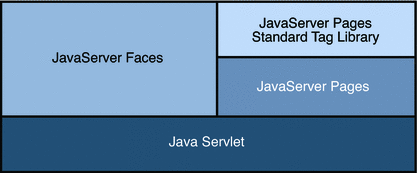

JavaServer Faces Technology Benefits
One of the greatest advantages of JavaServer Faces technology is that it offers a clean separation between behavior and presentation for web applications.
A JavaServer Faces application can map HTTP requests to component-specific event handling and manage components as stateful objects on the server. JavaServer Faces technology allows you to build web applications that implement the finer-grained separation of behavior and presentation that is traditionally offered by client-side UI architectures.
The separation of logic from presentation also allows each member of a web application development team to focus on a single piece of the development process, and it provides a simple programming model to link the pieces. For example, page authors with no programming expertise can use JavaServer Faces technology tags in a web page to link to server-side objects without writing any scripts.
Another important goal of JavaServer Faces technology is to leverage familiar component and web-tier concepts without limiting you to a particular scripting technology or markup language. JavaServer Faces technology APIs are layered directly on top of the Servlet API, as shown in Figure 4-2.
Figure 4-2 Java Web Application Technologies
This layering of APIs enables several important application use cases, such as using different presentation technologies, creating your own custom components directly from the component classes, and generating output for various client devices.
Facelets technology, available as part of JavaServer Faces 2.0, is now the preferred presentation technology for building JavaServer Faces based web applications and offers several advantages.
Facelets technology offers the advantages of code reuse and extensibility for components through templating and composite component features.
When you use the JavaServer Faces Annotations feature, you can automatically register the backing bean as a resource available for JavaServer Faces applications. In addition, implicit navigation rules allow the developers to quickly configure page navigation. These features reduce the manual configuration process for applications.
For more information on Facelets technology features, see Chapter 5, Introduction to Facelets.
Most importantly, JavaServer Faces technology provides a rich architecture for managing component state, processing component data, validating user input, and handling events.